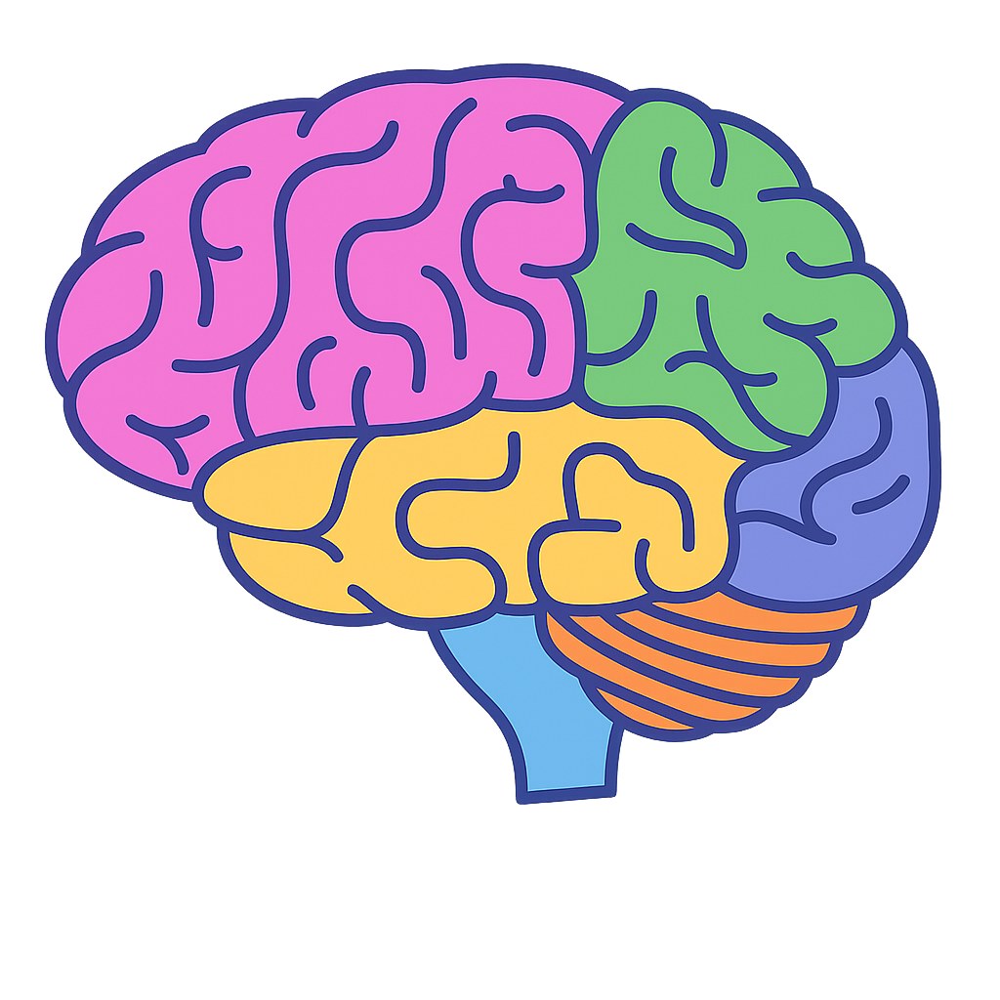

📍
ليش دماغي ما بيسكّت؟ كل شي لازم أفكر فيه؟ حتى قبل النوم!
🤯 למה
המוח שלי לא נרגע? למה אני חושבת על כל דבר, כל הזמן?
📍
بكون بين الناس وبحس إني مش مفهومة... طبيعي؟
😶🌫️ אני עם כולם –
אבל מרגישה לבד. זה נורמלי?
📍
أوقات بحس في شي جواتي بيزعجني... بس ما بعرف كيف أعبّر عنه.
💬
לפעמים יש משהו בפנים שמציק לי... אבל אין לי איך לבטא את זה.
📍
ليش بحس تعبانة دايمًا؟ حتى من أشياء بسيطة؟
😮💨 למה אני כל הזמן
עייפה? גם מדברים קטנים?
📍
أنا متقلبة؟ لحظة بضحك، لحظة بزعل... ليش هيك؟
🎭 אני משתנה כל
רגע... זה רגיל בגיל שלי?
📍
ليه بحس إن شكلي مش كفاية؟ الكل أحلى، وأنا؟
🪞 למה אני מרגישה לא
מספיק יפה? כולם נראים טוב יותר ממני.